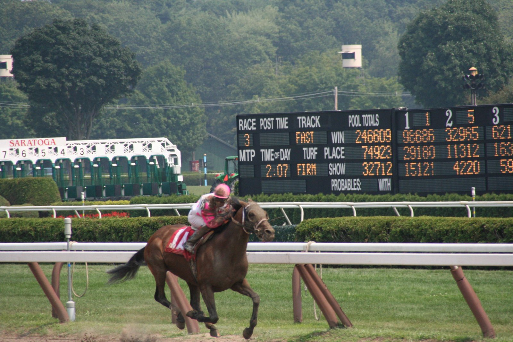

Arabian Queen y Talmada, las dos yeguas madre que reclaman protagonismo en la temporada de lisos
No hay un título oficial de yegua madre del año, pero Talmada, con dos ganadores de Grupo I, y Arabian Queen, con cuatro productos con black type, ya tienen argumentos para optar a él.

La estadística de sementales no se cierra oficialmente hasta final de año, pero el sábado, a la hora del té, ya estaba prácticamente decidida. Ombudsman, hijo de Night of Thunder, se escapó en el Champion Stakes (Grupo I), y la fuerte dotación del Champions Day dejó el campeonato encarrilado para su padre.
Con las yeguas madre no hay cifra que zanje el debate. No existe un título oficial de yegua del año, así que la elección se vuelve más subjetiva que el frío recuento de premios que decide la estadística de sementales.
Talmada tiene uno de los expedientes más sólidos. La hija de Cape Cross, propiedad del fallecido jeque Ahmed Al Maktoum, ha dado este año dos ganadores de Grupo I. Almaqam se adjudicó la Tattersalls Gold Cup. Su hermano menor, Saddadd, fue tercero en esa misma carrera en el Curragh y después se impuso en el Grosser Preis von Baden.
El caso de Arabian Queen, de Jeff Smith, se apoya en la amplitud de su producción. Cuatro de sus productos han obtenido black type esta temporada, es decir, resultados en pruebas de categoría, y tres de ellos han ganado una. La comparación tiene dos lecturas: Talmada aporta la calidad de dos Grupos I y Arabian Queen, el número de hijos que han brillado en un mismo año.
Arabian Queen, hija de Dubawi preparada por David Elsworth, también tuvo una carrera deportiva de éxito antes de pasar a la yeguada.
Por Martín Larrañeta